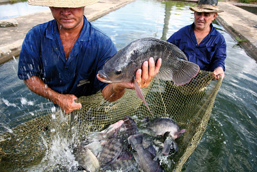

En general existen 4 etapas de producción:
1.- Criadero: incubación de huevos y cría de los peces en sus primeras etapas.
2.- Granjas: los peces, en su etapa más madura son llevados a una "granja" en donde crecen hasta llegar a su etapa de "cosecha".
3.- Alimentación: en las granjas se alimentan con alimento de las fábricas de piensos (también parte de la acuacultura).
4.- Procesamiento: los peces son llevado a una fábrica de procesamiento en donde se empacan y envían a tiendas de alimentos.
